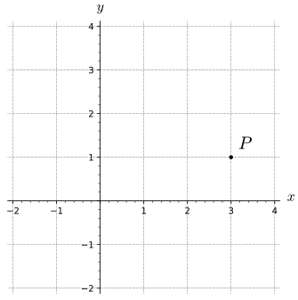
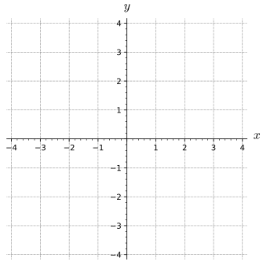
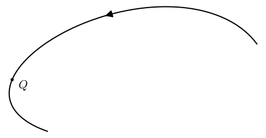
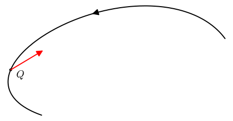

How can we split acceleration into the direction of travel and the direction of turning.
Velocity and acceleration are vital measurements in the study of physics and mechanics. Velocity is the derivative of position/location (the central measurement of in kinematics, the study of motion). To understand velocity as a vector valued function of time, we looked at how the magnitude and direction of position change. In particular, we separated velocity into its critical parts, namely speed (magnitude of velocity) and unit tangent vector (direction of travel). Speed measures how fast the position of an object is changing as a function of time (as a scalar) and \(\vT\) measures in what direction position is changing (measured with a unit vector).
Newton’s Second Law of Motion relates the forces acting on an object to its acceleration through the formula \(\vec{F}_{net}= m \vec{A}\text{,}\) which is summarized as the sum of the forces acting on an object is the same as the mass times the acceleration of the object. We would like to understand acceleration as a change in the magnitude and direction of the velocity vector. In this section we will use our knowledge of calculus and vector measurements to split the acceleration vector up into parts dealing with changes in he magnitude and direction of the velocity vector. Further, we wil make sense of these measurements in terms of thier physical meaning.
Preview Activity10.5.1.
(a)
Given the curve in Figure 10.5.1 with direction of travel labeled and the point \(P\) labeled, draw and label vectors in the direction of \(/vT\) and \(/vN\) at the point \(P\text{.}\)

Figure10.5.1.The curve \(C\) with direction of travel and point \(P\) labeled
(b)
Figure 10.5.2 shows \(\va\text{,}\) the acceleration vector at the point \(P\) (drawn in red). Draw the projection of \(\va\) on \(\vT\) and the projection of \(\va\) on \(\vN\) at the point \(P\text{.}\)

A 2D curve with acceleration vector shown in red at the point \(P\)
Figure10.5.2.A 2D curve with acceleration vector shown in red at the point \(P\)
(c)
Based on your answers to part 10.5.1.b, Is \(\va \cdot \vT\) is positive, negative, or zero at \(P\text{?}\) Write a sentence or two to justify your answer.
(d)
Based on your answers to part 10.5.1.b, Is \(\va \cdot \vN\) is positive, negative, or zero at \(P\text{?}\) Write a sentence or two to justify your answer.
(e)
Given the curve in Figure 10.5.3 with direction of travel labeled and the point \(Q\) labeled, draw and label vectors in the direction of \(/vT\) and \(/vN\) at the point \(Q\text{.}\)

Figure10.5.3.The curve \(C\) with direction of travel and point \(Q\) labeled
(f)
Figure 10.5.4 shows \(\va\text{,}\) the acceleration vector at the point \(Q\) (drawn in red). Draw the projection of \(\va\) on \(\vT\) and the projection of \(\va\) on \(\vN\) at the point \(Q\text{.}\)

A 2D curve with acceleration vector shown in red at the point \(Q\)
Figure10.5.4.A 2D curve with acceleration vector shown in red at the point \(Q\)
(g)
Based on your answers to part 10.5.1.f, Is \(\va \cdot \vT\) is positive, negative, or zero at \(Q\text{?}\) Write a sentence or two to justify your answer.
(h)
Based on your answers to part 10.5.1.f, Is \(\va \cdot \vN\) is positive, negative, or zero at \(Q\text{?}\) Write a sentence or two to justify your answer.
Subsection10.5.1Splitting Acceleration
By definition (of \(vT\)), recall that \(\vv\) is parallel to \(\vT\) (when not the zero vector or DNE) and that \(\vT \cdot \vN =0 \text{.}\) In other words, all of the velocity is in a parallel direction to the unit tangent vector and the unit normal is always orthogonal to the unit tangent to a curve (when they exist). In this subsection, we will look at splitting the acceleration vector up into the direction of travel and the direction of turning.
Definition10.5.5.
The tangential component of acceleration is defined as \(a_\vT = \va \cdot \vT \) and the normal component of acceleration is defined as \(a_\vN = \va \cdot \vN \text{.}\) Because \(\vT\) and \(\vN\) are orthogonal to each other and unit vectors, \(a_\vT\) and \(a_\vN\) will give the amount of acceleration in the direction of travel and the direction of turning, respectively.
Given the definitions of \(a_\vT\) and \(a_\vN\text{,}\) can the acceleration vector of parameterized curve have any additional parts? Can \(\va\) have any component in another direction (like \(\vB\))? It is not obvious, but the answer is No!. The acceleration vector will only have components in the \(\vT\) and \(\vN\) directions. The scalar \(a_\vN\) measures the acceleration due to change in the direction of \(\vv\) and the scalar \(a_\vT\) measures the acceleration due to the change in magnitude of \(\vv\text{.}\) This interpretation of \(a_\vT\) and \(a_\vN\) follows from a neat product rule argument based on how we split the velocity vector into speed (magnitude) and \(\vT\) (direction):
The last line of this algebra follows from the definition of the unit normal vector (\(\vN=\frac{\vT'}{\Vert\vT'\Vert}\)).
This algebraic splitting of acceleration gives a nice way to interpret \(a_\vT\text{.}\) Specifically, \(a_\vT\) is the rate of change of speed!
The scalar \(a_\vN\) is much harder to interpret right now because our algebraic splitting above gives \(a_\vN = (\text{speed}) \Vert\frac{d\vT}{dt}\Vert\) and \(\frac{d\vT}{dt}\) (and \(\Vert\frac{d\vT}{dt}\Vert\)) are just as hard to calculate as \(\vN\) directly (which is awful as shown in Activity 10.4.3). In the next section, we will address the meaning of \(a_\vN\) a bit more, but for now you should think of \(a_\vN\) as the acceleration due to a change in the direction of the velocity vector. In other words, \(a_\vN\) is the amount of acceleration due to turning.
Activity10.5.2.
(a)
The tangential part of acceleration is defined as \(a_\vT = \va \cdot \vT \) and our algebraic interpretation also gives us that \(a_\vT = \frac{d\text{speed}}{dt}\text{.}\) Using these formulas as a basis for your explanations, state whether \(a_\vT\) can be zero or not. Either explain why this is not possible or what it would mean for \(a_\vT\) to be zero.
(b)
The tangential part of acceleration is defined as \(a_\vT = \va \cdot \vT \) and our algebraic interpretation also gives us that \(a_\vT = \frac{d\text{speed}}{dt}\text{.}\) Using these formulas as a basis for your explanations, state whether \(a_\vT\) can be negative or not. Either explain why this is not possible or what it would mean for \(a_\vT\) to be negative.
Activity10.5.3.
activity about the mechanisms of driving, biking, boating and how these connect ot a_n, a_t, T, and N.
Activity10.5.4.
activity to use formulas to calculate at t = 0 for ... r, v, a, T, a_T, a_N, N Use a plotting program to verify tht all fo this makes sense
Activity10.5.5.
match the plots with each of the following quantities/vectors. Show a few different examples
Activity10.5.6.
Ask about a_T and a_N being poperties of the driver or the road.
Subsection10.5.2Summary
The integration process shows that the length \(L\) of a smooth curve defined by \(\vr(t)\) on an interval \([a,b]\) is
\begin{equation*}
L = \int_a^b |\vr'(t)| \, dt.
\end{equation*}
Arc length is useful as a parameter because when we parameterize with respect to arc length, we eliminate the role of speed in our calculation of curvature and the result is a measure that depends only on the geometry of the curve and not on the parameterization of the curve.
We define the curvature \(\kappa\) of a curve in 2- or 3-space to be the rate of change of the magnitude of the unit tangent vector with respect to arc length, or